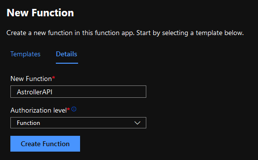

If you have developed an API and you know that all you want to do is make a request, process it on the server and get the response you need. But it all comes crashing when you get stuck setting up the right environment on the server, or your dependencies go missing.
It’s time to change that. What if you only needed to be concerned about what data the API receives, what it does it with and what it returns as response. True, all of us fear seeing the internal server error arising from mismatched server configurations.
You could argue that you are a master in managing servers and have never had issues with server configurations and environment settings. Well, but are you paying only for what you use? Most cloud services provide you certain resources (that can be scaled up) but you are still charged for each second of the app being deployed on the cloud, whether you use it or not.
Here is where Azure Functions saves the day. It supports your favourite languages including C#, JavaScript, Python, Java, TypeScript and more. You can write your function in any of these languages and you are only charged when the function is being executed. So, if it was called once in the past 24 hours and execution took 10 seconds, you get charged for 10 seconds.
If your API can be written down in one function, you can run it on Azure Functions and save the hassles and money.
It enables you to run code segments that are perfect for APIs. It also allows you to write code that executes with a timer. So, suppose you want to back-up a file system every 12 hours to a remote server, you can write the function for it and Azure Functions will ensure that it runs every 12 hours.
Let's dive straight into it now. There are numerous ways to make an Azure Function. Today, let's look at it from the Azure Portal.
Open the Azure Portal, login and select Create a resource to access the Marketplace.
Search for Functions and choose Function App.
Click on Create to open the setup for the Function. Fill up the details as you need them. Be careful with the Region as Functions might not be available in all Regions (Central India, for example, does not support Functions but South and West India do). I’ll go ahead with Node.js v12 LTS as my environment. Once done, click next and select a Storage Account.
You will need to set up storage so that there is some memory available for the API or app to store your files and log data. Don’t worry, even though it says storage account, it is just a storage allocation for you on the cloud that you can use for other projects as well. Think of it as your hard disk in the cloud that can store clustered, unstructured data, media files, etc (end of Firebase’s expensive monopoly?).
Choosing the plan in this section of the setup makes all the difference in the world if you are low on budget. Go for serverless so that you can peacefully focus on building, testing, and deploying your function. Serverless means that there is no dedicated server being allocated to you. Your function just needs storage to run. You will only be charged for the computation time and memory that you use. No server fees. If you go for a regular plan, you will be charged even if the function is sitting idle.
Enable Application Insights and smash the Create button. Now you wait. Wait till theresources are deployed and think about what you just did. You deployed a serverless app on the cloud, while minimising costs and giving up all concern for infrastructure. The app that you are now deploying will auto scale to handle millions of calls if that is what you want to throw at it.
Now that the function deployment is complete, it's time to dive into the code and see the app work first-hand. Click on Go to resource.
From the left side panel, choose Functions under the Functions header and click on to create a new function.
There are multiple options to choose from. I will demonstrate the HTTP Trigger today. This will allow you to build an API.
Choosing a function-level authorisation allows you to allow access to only one Function with each access key.
Open the newly deployed function and click on Code + Test from the left side panel. It will have a boiler plate ready for you already.
This boiler plate is a simple Node.js API which requires a ‘name’ parameter and returns a basic answer. Click on Get Function URL to get the API endpoint along with the access key. This access key authorises you to run the Function and is a mandatory query parameter for the HTTP request.
An API call be made using Postman or any other API testing software. Pass a name parameter as query to the API call and test it.
It’s done! You have a server less function running in the cloud, which is more than just a simple API. If you are new to APIs, you should play around with what you just made to understand concepts better. Let me write down a slight modification of this API to help you get started with making your own.
Azure Functions are dynamic. You can:
There is so much more to Azure Functions than just a regular HTTP API. Discover more about Azure Functions on the vast and in-depth official documentation from Microsoft.
I hope this helped you in your project. A few claps on this blog on Medium would help me go a long way.
Find me on Medium Subscribe For Future Blogs